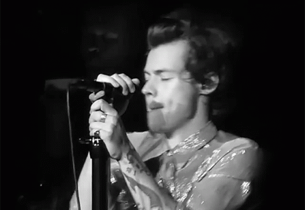

Harry Styles es un cantante y compositor británico de música pop, ex miembro de la boy band One Direction, y el primer hombre que consigue ocupar en solitario la portada de Vogue USA.
nació en Cheshire (Reino Unido) en 1994 y creció junto a su madre y su hermana después de que sus padres se divorciaran.
Pronto comenzó a interesarse por la música, llegando a montar su propia banda.
Solista
En 2016, tras la separación de la banda, Styles comenzó a trabajar en su disco de debut en solitario. En mayo de 2017 se publicó su trabajo homónimo que incluía su primer gran hit,
Sign of the Times. Convertido en uno de los músicos más influyentes de Reino Unido, también debutó en el cine con la película Dunkerque de Christopher Nolan.
Album
Fine Line (2019)
Up All Night (2011)
Take Me Home (2012)
Midnight Memories (2013)
Four (2014)
Perfect EP(2015, EP)
Made in the A.M.(2015)

Album Favorito:
Integrantes One Direction
La banda actualmente esta separada.
Harry Styles
Liam Payne
Louis Tomlison
Niall Horan
Zayn Malik